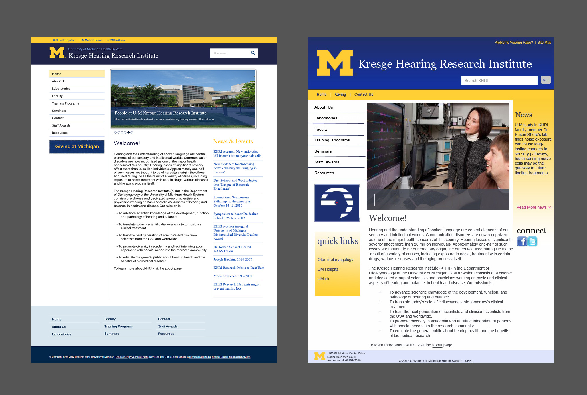
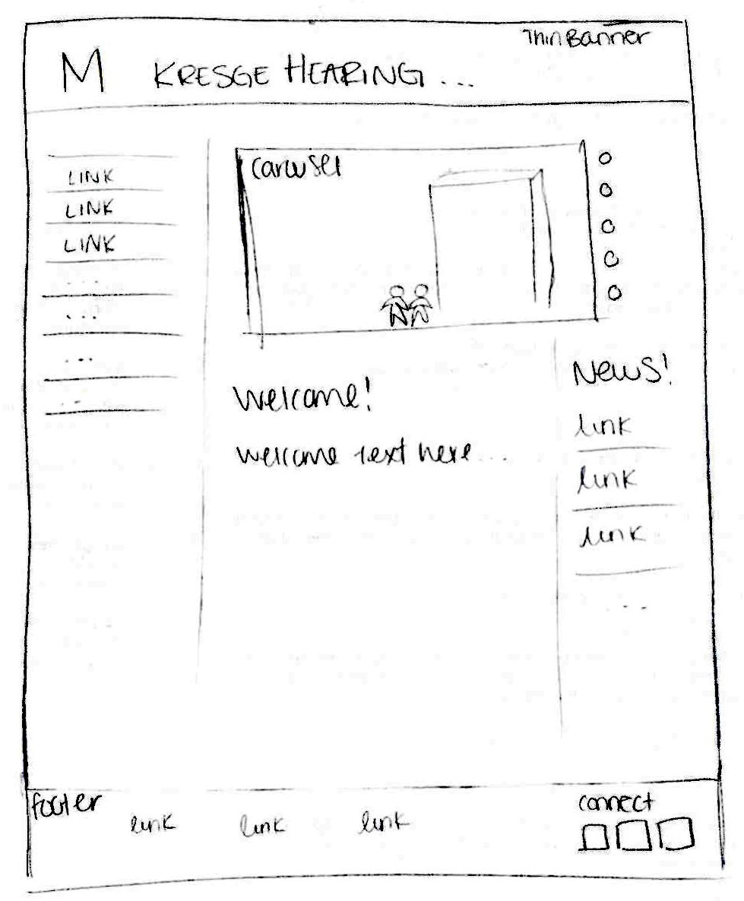
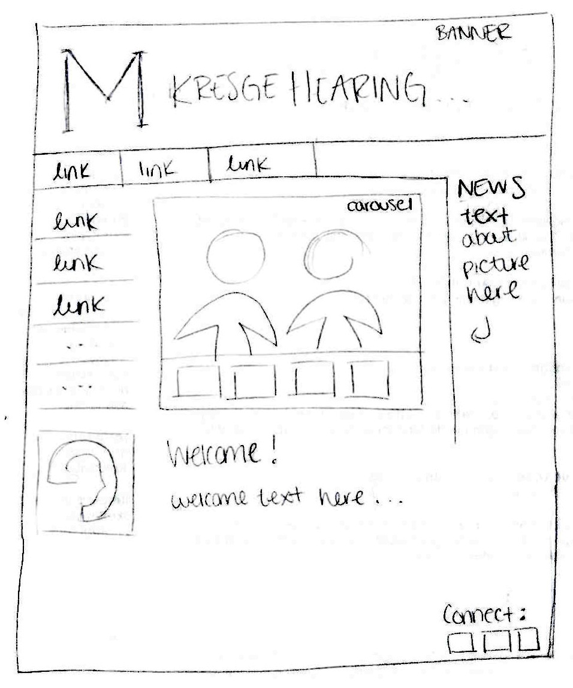

Kresge Website Redesign
My Role
- Design
Process
- Sketching
- Hi-fidelity Mockups
Client
- Kresge Hearing Research Institute
Timeline
- 4 months
- Sept - Dec 2012
- Side project

Final Concepts
The Kresge Hearing Research Institute website redesign was a project I worked on during a portion of my 2 year work-study at KHRI. The project was to find inspiration in other university websites, and design mockups for a more modern KHRI website. The new website has not yet been implemented.

